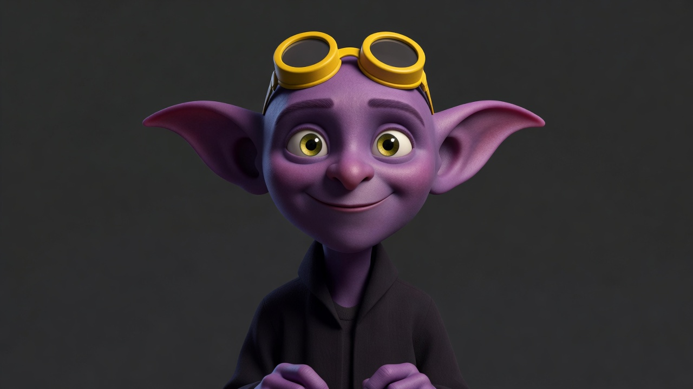
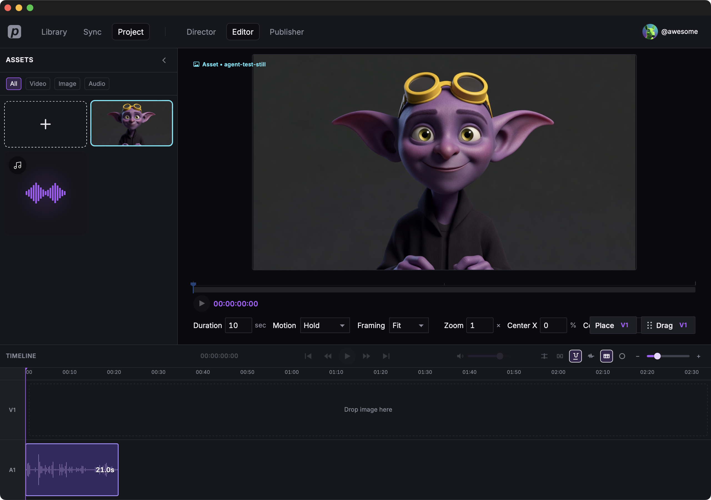
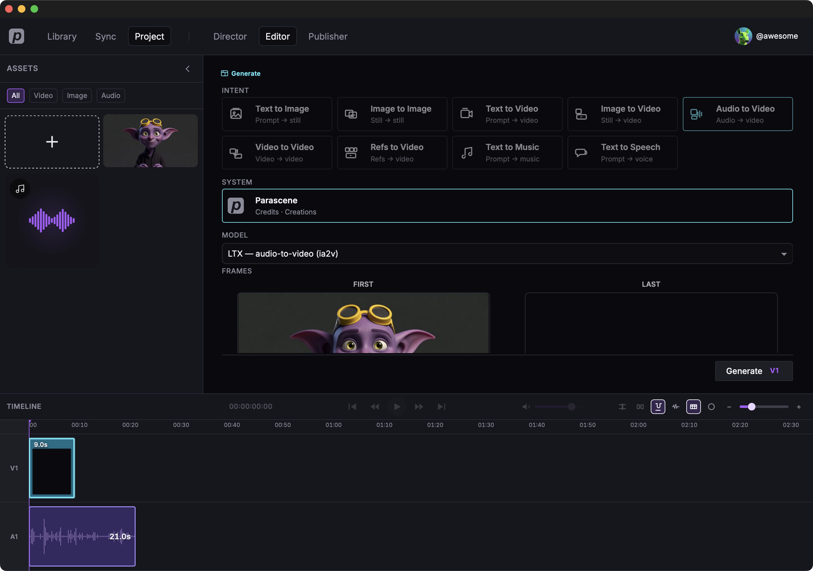
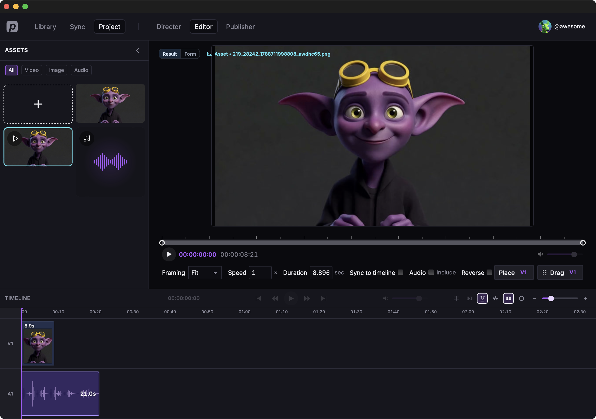

Generate a video with audio
We'll use the same image we generated in Generate an image. Then add a spoken file and make a short clip that lip-syncs to that speech.

The spoken file
Here's the clip we used — about 21 seconds.
Put the speech on the timeline
- In Library, click Add from disk… in the sidebar and choose the spoken file.
- Open Editor.
- Drop the full file on the audio lane. Leave it whole — don't trim it.

Lip-sync clip
Add a 9 second video clip at the start of the timeline.
Choose Audio to Video, System Parascene,
model ltx_a2v (LTX), source audio full mix,
start frame = the goblin still.

This is the motion prompt we used:
The same friendly purple goblin speaks straight to camera. Playful, not sinister. Mouth, lips, and jaw clearly open and close in exact sync with the words, nothing covering the mouth, cheeks, or ears. Huge bare ears and yellow forehead goggles stay on — no headset, no earpiece, no microphone. Excited on the first line, a short laugh on the second, then he leans in and watches the viewer. Soft hands gesture near his chest. Head stays mostly still, eyes on camera. Plain dark gray backdrop, soft lighting, no text, no extra propsClick Generate and wait. Later clips fill the rest of the 21 seconds the same way.

Where to go from here
Local tools — FFmpeg, Demucs, and Whisper on this computer.